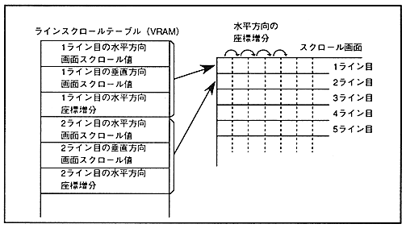

The line scroll function is a function that can specify the screen scroll value in the horizontal and vertical directions and the coordinate increment in the horizontal direction in line units, and is specified by the line scroll table stored in VRAM. The data value of the line scroll table is specified as a relative value. The value specified in the screen scroll value register is added to the screen scroll value stored in the line scroll table to obtain the display coordinates. The table data reading interval can be selected from 4 types of 1 line, 2 lines, 4 lines, and 8 lines. When selecting an interval of 2 lines or more, vertical coordinate calculation is used. The value of the increment register is used.
∙ Do not set a value that exceeds the setting of the reduction enable register for the horizontal coordinate increment. Figure 5.3 shows the line scroll function.
Figure 5.3 Line scroll function

The line scroll table stores the horizontal screen scroll value, vertical screen scroll value, and horizontal coordinate increment from the smallest address. The line scroll data to be stored consists of only the data required according to the settings of the line scroll register.
．Individual horizontal screen scroll value on line scroll table, vertical direction